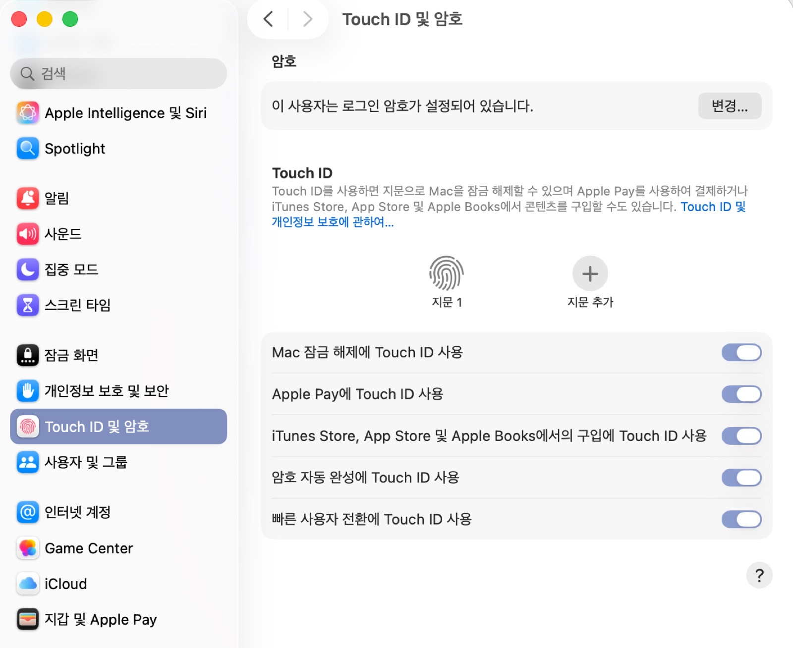

지난 편에서 PanicVault를 아이폰에 설정하면서 만족스러워했는데, 같은 걸 맥북에서도 쓰려다가 생각지 못한 구멍을 하나 발견했다.
맥에선 앱별 Touch ID 차단이 안 된다
PanicVault는 유니버설 구매라 맥에도 바로 설치할 수 있었다. 근데 나는 맥에서도 비밀번호 + 유비키로만 열리길 원했지, Touch ID로는 못 열리게 하고 싶었다. 시스템 설정을 뒤져봤는데 앱 단위로 Touch ID를 끄는 옵션 자체가 없었다.

iOS는 설정 → Face ID 및 암호 코드 안에 앱별로 "이 앱이 Face ID 쓰게 허용할지" 토글이 따로 있어서, 앱이 아무리 자기 내부 설정을 켜도 OS 차원에서 막을 수 있다. 근데 macOS엔 이런 앱별 생체인증 권한 체계 자체가 없다. 결국 남는 건 PanicVault 자체 설정 안의 "Unlock with Touch ID" 토글뿐이었다.
지문 정보 자체는 못 훔쳐간다는 확인은 했다
맥을 통째로 털려서 지문 정보까지 빼갔다고 가정해도, 그걸로 원격에서 Touch ID를 우회할 수는 없다는 건 확인했다. 지문은 Secure Enclave라는, 메인 OS랑 완전히 분리된 별도 보안 칩 안에서만 처리되고 절대 밖으로 안 나간다. 게다가 Touch ID는 그 순간 센서에 진짜 손가락이 물리적으로 닿아야 작동하는 구조라, 저장된 지문 값을 소프트웨어로 "재생"해서 인증을 우회할 방법 자체가 없다. 이 구조는 맥·아이폰·아이패드 전부 동일하다(Apple Silicon 기준).
근데 진짜 문제는 따로 있었다
지문을 훔칠 수 없다는 건 안심할 일이지만, 핵심은 그게 아니었다. 토글은 언제든 다시 켤 수 있다는 거다. 그리고 다시 켜는 순간, 유비키라는 "나와 별개인 물리적 객체"를 따로 확보해야 한다는 조건 자체가 사라진다.
원격 공격자한텐 의미 없지만, 물리적으로 내 옆에 있을 수 있는 상황(강압, 동거인·동료가 맥에 접근 가능한 상태에서 내 손가락만 갖다 대게 하는 상황)에선 유비키를 따로 찾아낼 필요 없이 그 자리에서 바로 뚫린다.
이걸 막을 기술적 수단이 macOS엔 없다. 결국 남는 건 "이 토글을 절대 다시 켜지 않는다"는 스스로의 다짐뿐인데, 나는 보안을 사람의 의지력에 맡기고 싶지 않다.
결론 — 맥용 PanicVault는 안 쓰기로 했다
아이폰·아이패드용 PanicVault는 OS가 앱별 생체인증을 강제로 차단해주니 안심하고 쓸 수 있지만, 맥용은 이 한 겹이 빠져있어서 보안 수준이 한 단계 떨어진다. 그래서 맥에서는 PanicVault를 쓰지 않기로 했다.
대신 맥OS가 기본으로 지원하는 DMG(디스크 이미지) 암호화로 가려고 한다. 서드파티 앱의 토글에 기대는 대신, OS 자체의 디스크 유틸리티로 암호화 볼륨을 만들면 적어도 "앱 설정이 몰래 바뀌어서 뚫린다"는 이 특정 구멍은 원천적으로 없앨 수 있다. 다음 편에서 만들어보겠다.